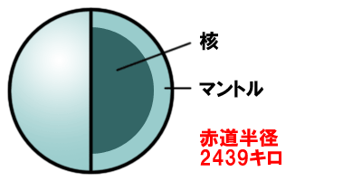
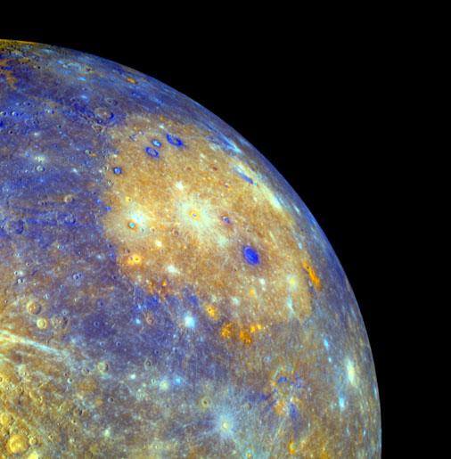
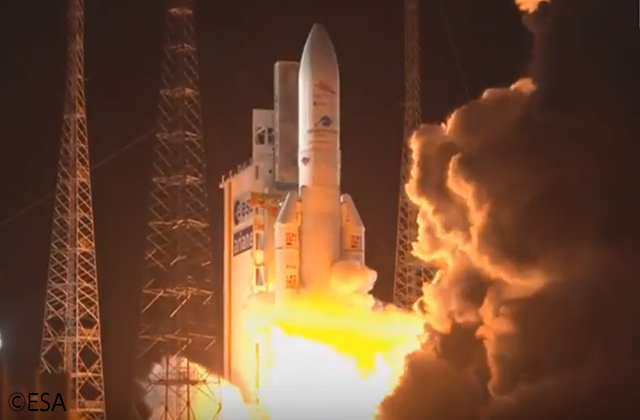

水星の特徴
水星は太陽系でもっとも太陽に近くにある。大気はほとんどないので、表面の温度は昼間は450℃、夜中は-180℃まで下がる。岩石と金属から水星は出来ている。
水星には大きなクレーターで出来ているカロリス盆地がある。カロリス盆地とは、クレーターのまわりを丸くかこんでいるカロリス山脈という波模様がついている場所のこと。
水星の発見
水星はシュメール人の時代（紀元前3000年）から知られている。古い記録ではバビロニア人により観測されていて、古代ギリシャのヘラクレイトスは、水星と金星が地球ではなく、太陽のまわりをまわっていると考えていた。ギリシャで水星が5つの惑星の一つとわかったのはプラトンの時代からである。
ギリシャでは、水星のことをヘルメスと言われている。ローマではメルクリウス、英語ではマーキュリーと呼ばれている。マーキュリーとは足が早いという意味で付けられた。
1639年にはイタリアのジョバンニ・ズッピが望遠鏡を使って水星を見て、水星にも金星や月と同じように、みちかけがあることを発見した。その結果、水星が太陽をまわっていることが証明された。
日本が水星調査
2018年10月20日、JAXAは国際水星探査計画BepiColombo（べピコロンボ）ミッションの水星表面探査機（MPO）及び水星磁気圏探査機「みお」（MMO）を搭載したアリアン5型ロケットを平成30年10月20日（土）22時45分28秒（現地時間）（10月20日（土）10時45分28秒（日本標準時））に、フランス領ギアナのギアナ宇宙センターから打ち上げられた。